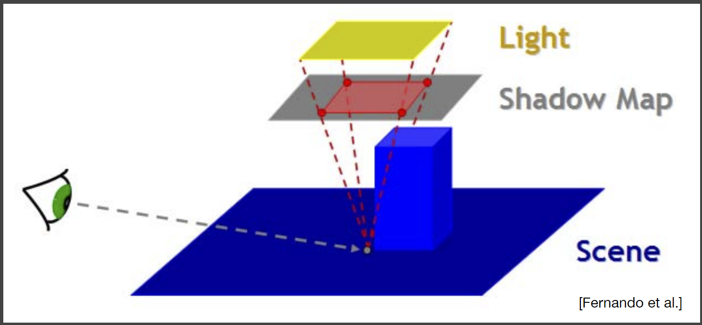

这一周刚好七天重新写了一边Games202的前四个作业，把以前有漏洞或者没有涉及的Bouns部分也全部解决和实现，显示的效果还不错，代码量（包括Shader）估计在3500行左右，这还是OpenGL包装过以及使用一些小轮子的情况下…lambda函数嵌套用起来真优雅，不过编译报错也是看的人废了。
最终实现效果
作业1 ShadowMap
ShadowMap的基本思路为：将相机放在光源处看向场景，记录深度信息，一般方向光对应正交投影，
而聚光灯或者点光源对应透视投影，以及此时的View和Proj矩阵，记为LVP。有了深度信息后，正常渲染时，在片段着色器中，可以获取片段的位置变量pos，使用LVP对其进行变换。
注意OpenGL下NDC的xyz范围都是-1~1
如果uv都是0到1之间，说明在相机视角下的这个片段位置，也可以被灯光看见，可以根据uv从
之前的深度信息图中查询到该片段在灯光视角下的深度值lz，将其与计算得到的z值
做比较，如果z > lz，说明该片段被遮挡住了。
但是这样子会造成一个问题，因为记录深度信息的纹理分辨率是有限的，因此图中的一个像素，
代表一个投影区域中心的深度值，任何在该区域内的其它位置，在第二步渲染查询深度值时，都将是一样的，这样子就会导致物体表面出现自遮挡现象，像是黑色的摩尔纹，放一下课件里的图。
解决这个问题，一般思路是满足 才被认为遮挡住，eps可以根据片段法向量和实现的夹角来缩放，
实际中，可以将原来的pos沿着normal移动eps的距离再进行变换。
解决自遮挡的问题后，还是有一定的问题，比如受限于深度图的分辨率，阴影会出现锯齿，一个简单而自然的想法就是对阴影进行过滤、模糊，即计算一个片段的阴影系数时，不再是0或者1，而是0~1之间，这就是PCF的思路。最简单的做法，就是取固定的滤波核，比如5x5，滤波核取得越大，阴影越模糊，反之阴影越尖锐。滤波范围理论上取圆盘区域可能更加符合实际，因此也可以划定一个半径，然后均匀采样深度信息图上圆盘内的其它深度值，与z作比较，求出阴影系数的平均值。作业还提供了圆盘泊松采样的方法，类似于一种由中心向外的螺旋线。
然而现实中的阴影其实是hard和soft兼具的，被遮挡的点里遮挡物越近，阴影越尖锐，反之则越模糊。放一张闫老师特别称赞的一张图。
可以观察到，笔尖的阴影边界特别清晰，而远一点的阴影边界则自带模糊，我觉得这张图对形成原因解释地比较清晰。
模糊的阴影形成是因为部分光线被遮挡。因此PCSS的基本思路就是找出适当的滤波区域大小，再进行PCF过滤。
PCSS的原理图如下。
阴影的滤波区域大小与三个变量有关，灯光区域大小、遮挡物的深度和阴影处的深度。其中唯一不知道的就是遮挡物的深度，但还是要用平均深度替代，因此为了求这个平均深度，我们需要PCF求出平均遮挡深度，再根据这个平均遮挡深度求出滤波半径，再进行一次PCF，相当于两次的PCF，因此PCSS一般比PCF更消耗性能，但是获得的效果也会更好。另外，求平均遮挡深度时的PCF的滤波范围大小怎么确定呢？可以是固定的，不过更好的做法是根据光源的大小和遮挡处的深度。

将深度图放在灯光的近平面（假设不是方向光源，因为方向光源理论上不会产生软阴影），根据相似三角形关系可以求出滤波核在深度图上的对应大小。然后套用PCF求出遮挡的平均深度即可。实际应用时，光源的大小和近平面的大小需求调整到合适的范围。
作业2 PRT
作业3 SSRT
屏幕空间反射（光线追踪），建立在延迟渲染的基础上，也就是说进行光线追踪的信息来源于GBuffer，并不是整个场景的信息，所以它并不是那么准确，比如对于一个处于阴影处的物体，它的光照只能来源于间接光，但是如果屏幕中没有其它被直接光照射的物体，那么它就没有光照来源，只能为黑色，或者靠着ambient环境光证明自己的存在。但是SSR当然尤其好处，就是可以做到光栅化无法解决的反射求交问题。在光栅化流水线中，如果想要对一根射线与场景三角形求交是十分困难的，如果是OpenGL只能是自己动手实现一下BVH？见过大佬实现过orz…而对于SSR，可以很简单地使用ray marching求出反射光线的交点，当然ray marching这一方法本身是比较消耗性能的，不过也有优化加速的方法，因此ssr在特定场景（比如限制相机视角）效果还是十分好的。ssr的原理和流程图如下，其实还是十分简单的。

ssr建立在延迟渲染的基础上，那么就需要GBuffer，如上图，需要pos、normal、albedo、view depth，前三者是vec3类型，最后一个float类型，如果简单的话，我们需要四张二维纹理，其中pos应该需要rgb32f，normal和albedo可以使用rgb8，而view depth要使用r32f。综合下来，虽然内存使用是不大的，但是每次从GBuffer中读取这些信息，是有代价的，现在需要从四张纹理中读取，还是可以进行压缩的。其中normal和albedo可以进行压缩，从vec3变为vec2，因此所有的GBuffer最终只需要两张rgba32f即可。
法向量的压缩算法可以参考这个
vec2 octWrap(vec2 v) |
对于颜色，直接将r和b通道压缩为float16当作一个float32进行存储即可，代码如下。
//encode |
直接光的光照计算直接采用公式，计算完后存储到一张纹理中，作为计算间接光时的输入。
间接光的计算采用蒙特卡洛采用，使用z-weight半球采样，对应diffuse材质，公式为：
这里去掉了Vis项，因为通过ray marching找到的都是可见的，否则直接跳过这次采样。
对于线性的ray marching，也就是说光线在view space中按照固定步长前进，每次都要判断当前的位置是不是小于通过纹理查得的z值，如果小于则说明光线与该片段相交，即该被直接光照射的片段，可以被计算间接光这一片段看见，作为间接光的入射光源。这里其实会存在一个问题，那就是当判断当前光线所处的片段比z值小时，还有一个情况就是光线当前位置处于直接光照射的阴影处，这样子就会造成虚假的间接光入射源，特别是断层附近，低处会突然比较亮，如下图。
右图是进行了DepthThreshold判断后的结果，即光线位置的深度不可以小于z值太多，因此光线每一步前进的步长Step和DepthThreshold这两个变量的值是相互关系的。
线性ray marching还是很简单的，在间接光着色时，根据片段的当前位置，以及半球采样的方向发出一条光线，每一步前进固定大小的距离，每次都判断当前位置对应的view depth是不是比纹理记录的要小，以及如果当前光线已经跑出view空间范围了，如果满足所有要求，则返回true和直接光信息，累加起来就好。至于效率，当然是不太好，因为每次前进的距离都是固定的，在找到满足条件的位置前，有很多不必要的循环计算和查表，因此可以使用mipmap进行加速，建立view depth的mipmap，使用最小值策略。在光线前进时，如果当前位置深度大于某一lod下对应的深度，那么可以直接跳过这一lod这一像素对应的范围。这里就有一个重要的点，在view space里的以均匀步长前进是一种浪费，因为最后的深度纹理还要经过project变换才能得到，也就是说，view space里某个方向上两个点之间的连线经过project后，它的长度不是线性变化的，在投射投影下。另外它所代表的像素范围可能很小，即我们在view space里线性前进的步长设置应该根据view depth图像的分辨率来调整。不过由于投射摄影下，即便是同一方向上固定距离的两个点，随着它们与相机距离的变化，它们经过投影变化后在图像上代表的范围也会发生变化。比如根据近大远小，在远处前进距离x，对应查询的纹理范围更小，假设占据1个像素，而在近处前进距离x，对应查询的纹理范围就更大，可能为6个像素，因此为了有效利用，显而易见应该在远处以更大的步长前进，这个比例理论上可以找到的，根据z值和view space下方向的方向，不过很麻烦，简单的做法是在ncd坐标系下进行。在ndc坐标系下，计算view space下光线在ndc坐标系中的方向，以在ndc坐标系下固定的步长前进，对应到view space就是一种自适应采样步长的方法，这里都没有涉及到mipmap。